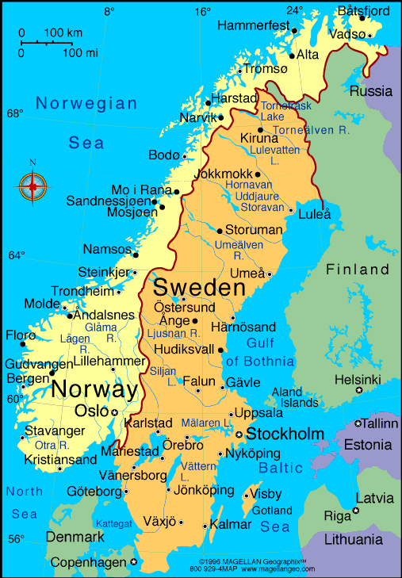

Kiruna is the northernmost town in Sweden
- Kiruna, city in the län (county) of Norrbotten, northern Sweden
- Kiruna Stadshuset. Monument
- Matojärvi Beachvolleybollplan
- Website
- Kiruna is the mining town of Sweden
Jokkmokk is a small town in Swedish Lapland. It's known for the centuries-old Jokkmokk Winter Market
- Jokkmokk town is known for its hospitality, good food, and live music
- Population - 4,923
- Area size - 3.59 km²
- Website
seat of Storuman Municipality in Västerbotten County
- Until 1912, the population of the village was about 40 inhabitants living in eight farms
- Area - 3.12 km²
- Population - 2,207
- Website
Växjö is a town in southern Sweden’s Kronoberg County
- "The Greenest City in Europe"
- Area - 29.29 km²
- Population - 66,275
- Website
Capital of Sweden
- Stockholm is the cultural, media, political, and economic centre of Sweden
- Famous for - Iconic city hall, the world's first open-air museum and the fabulous Abba museum.
- Area - 188 km²
- Population - 9.76 lakhs
- Website
The city of Baltic Sea
- Kalmar is a city in the southeast of Sweden
- Area - 19.5 km²
- Population - 36,392
- Website
-
The expression Sola i Karlstad
- Karlstad is often associated with sunshine and the symbol for Karlstad is a smiling sun
- Population - 95,167
- Area - 30.31 km2
- Website
Östersund Municipality and the capital of Jämtland County.
- Östersund is an urban area (city) in Jämtland in the middle of Sweden.
- Area - 108.2 km
- population - 50,960(
- Website
known as - Glada Hudik
- Hudiksvall is a city and the seat of Hudiksvall Municipality
- Population - 36 905
- Area - 9.71 km²
- Website
One of Sweden's oldest towns, it was already a commercial centre in the 13th century and played a prominent part in Swedish history
- shoe manufacture and biscuit making.
- Area - 1,380 km²
- Population - 132 277
- Website
FALUN - Sweden's treasure chest
- Falun was originally famous for its copper mine
- Area - 27.17 km²
- Population - 55 297
- Website